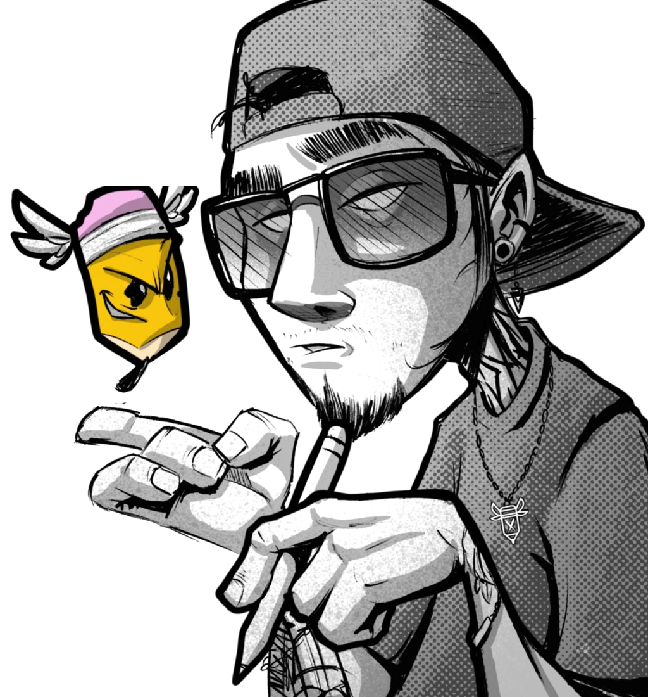
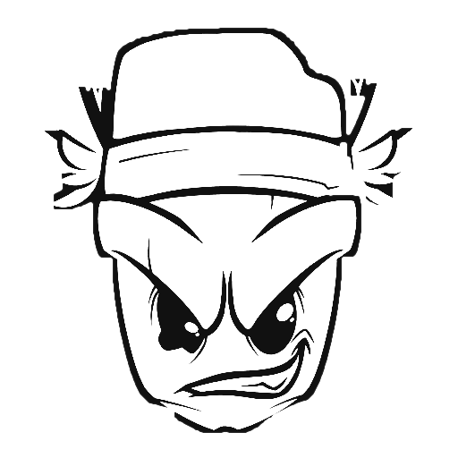
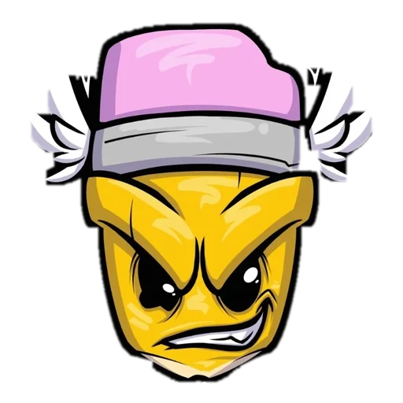
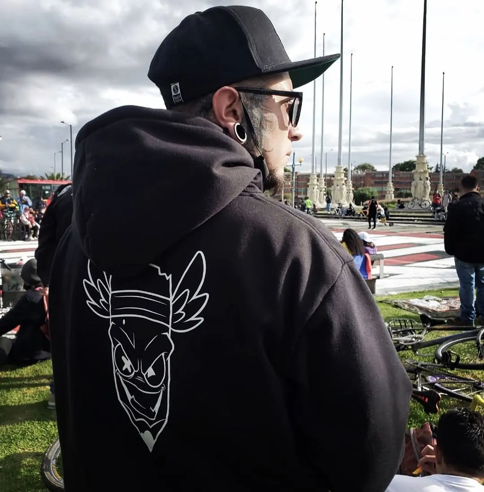

Muralismo · Graffiti · Tattoo — Bogotá
(El de los muñequitos)
Llevo más de 20 años metido en el cartoon y el graffiti, y desde hace más de una década también en la piel. Creo personajes con vida propia, cargados de actitud y color, para tu muro, tu negocio o tu brazo.

01 · Lo principal
Muros que hablan
Graffiti y muralismo son mi lenguaje principal. Cafés, pizzerías, bares y tiendas de Bogotá me llaman para que sus muros tengan un personaje que la gente recuerde: hecho a la medida de tu negocio, con mi trazo.
- 27+murales en Bogotá y Colombia
- 20años entre cartoon y graffiti
- 1personaje único por cada muro
¿Cómo nace tu muro?
- 1 Me cuentas tu negocio y me mandas fotos del muro.
- 2 Dibujo el boceto del personaje a tu medida.
- 3 Ajustamos detalles y te paso la cotización.
- 4 Llegan los aerosoles… y el muro cobra vida.
02 · El proceso
Del garabato al muñequito
Más que buscar la perfección, me interesa el proceso: equivocarme, explorar y encontrar las mañas en medio del caos. Así nace cada personaje, sea para un muro o para tu piel.


1 · Garabato
- Garabato. La idea suelta, a lápiz y sin miedo a equivocarse. Aquí se buscan la pose y la actitud.
- Línea. Defino el personaje con outlines gruesos: cara de travieso, dientes en bloque, la mirada.
- Color. Amarillo lápiz, rosa borrador, sombras y brillos. El color es lo que se ve a metros.
- ¡Vida! El muñequito sale del papel: al muro con aerosol, a la piel con la aguja, a la ropa, a stickers y figuras.

03 · La piel como lienzo
Tatuajes con personaje
New school, retratos cartoon, cover ups y piezas de convención. Mi estilo se reconoce a metros: color, personajes y actitud. Y te muestro el proceso sesión a sesión, para que confíes desde la primera cita. Residente de Clan Tattoo Studio.
Sesión a sesión
- Idea Me cuentas qué quieres y dónde va.
- Diseño Dibujo tu personaje a medida, no lo copio de internet.
- Stencil Pasamos el diseño a la piel y ajustamos.
- Sesiones Línea, color, brillo: te muestro cada avance.
- Cuidado Te acompaño en la cicatrización.
Sigue el proceso de cada pieza en @david_pencil.
- New school
- Retrato cartoon
- Cover up
- Personaje propio
- Piezas de convención
04 · Te lo has ganado
Premios y jurado
Premios
- 1er puesto New School + mejor tattoo del 3er día · Cali Tattoo Festival 2021
- 1er puesto · Kennedy Expo Tatt 2019
- 2º puesto Nueva Escuela · Bucaramanga Tattoo Festival 2025
- 2º puesto categoría Libre · Inkenshi Tattoo Fest, Soacha 2026
Jurado e invitado
- Jurado · Expo Tattoo La Sábana
- Jurado · Frontera Ink, Ipiales
- Jurado de graffiti + imagen oficial PACHAMAMA · Mafia Tattoo Festival, Jamundí
- Invitado especial · Festival de Tatuaje Oriente Colombia 2025
- “Artista Amigo” · Expo Tattoo Ciudad Bolívar 2026
05 · Muy pronto
Garabatos y Mañas
No solo creo: enseño. Garabatos y Mañas es la comunidad de los ¡Garabateros Mañosos!: charlas de creación de personajes y encuentros de dibujo en casas de cultura y convenciones. Más que la perfección, me interesa el proceso: equivocarse, explorar y encontrar las mañas en medio del caos.
Estamos preparando el próximo encuentro. Cuando haya fecha oficial, aquí verás la cuenta regresiva y podrás comprar tu entrada.
Avísame por WhatsApp¿Hablamos?
Cuéntame tu idea: un muro para tu negocio, un tatuaje con personaje o una charla para tu evento. Te respondo por WhatsApp.
Desde Bogotá, donde los garabatos cobran vida.